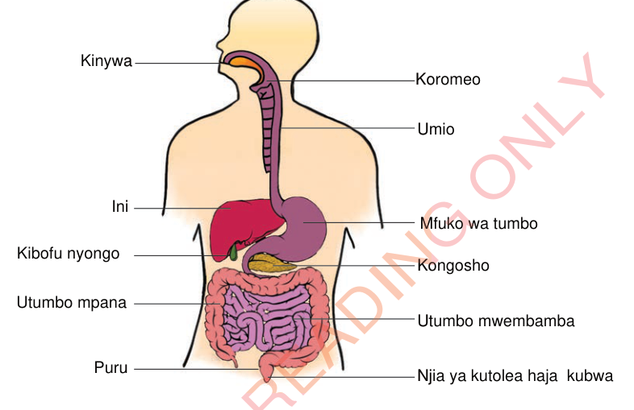

Sehemu za mfumo wa mmeng’enyo wa chakula
Tafuta taarifa kuhusu sehemu za mfumo wa mmeng’enyo wa chakula na kazi zake katika mwili wa binadamu kutoka maktaba au matini mtandao yanayoaminika.
Mfumo wa mmeng’enyo wa chakula unahusisha ogani mbalimbali ambazo hufanya kazi kwa pamoja ili kurahisisha uvunjwaji wa chakula. Mfumo wa mmeng’enyo wa chakula wa binadamu huanzia kwenye kinywa hadi kwenye njia ya haja kubwa. Mfumo huu unajumuisha njia ya chakula, ogani na tezi zinazofanya kazi pamoja. Sehemu kuu za njia ya chakula ni kinywa, koromeo, umio, mfuko wa tumbo, utumbo mwembamba, na utumbo mpana kama inavyoonekana au kuelezwa kwenye Kielelezo. Utumbo mwembamba unajumuisha duodeni na iliamu. Vilevile, utumbo mpana unajumuisha koloni, puru na njia ya kutolea haja kubwa. Ogani zinazounda mfumo wa mmeng’enyo wa chakula ni pamoja na ulimi, ini, kongosho, na kibofu nyongo. Mfumo wa mmeng’enyo wa chakula pia unajumuisha tezi za mate na zile zinazopatikana katika mfuko wa tumbo. Vilevile, baadhi ya ogani kama ini, kongosho na kibofu nyongo zina tezi zinazozalisha vimeng’enya vinavyotumika katika kumeng’enya chakula.

Kinywa
Mchakato wa mmeng’enyo wa chakula huanzia kinywani, ambako chakula hutafunwa na kuvunjwavunjwa na meno. Pia, katika sehemu hii, vyakula huchanganywa na mate. Vyakula vyenye wanga huanza kumeng’enywa katika sehemu hii na kisha kusafirishwa kupitia umio hadi mfuko wa tumbo.
Koromeo
Ni sehemu ya mfumo wa mmeng’enyo wa chakula inayopatikana kati ya kinywa na umio. Kazi yake ni kuongoza chakula kutoka kinywani hadi kwenye umio. Chakula huzuiwa kuingia kwenye njia ya hewa kwa kutumia kifuniko kinachofunga njia ya hewa wakati wa kumeza chakula. Kifuniko hicho huitwa kidakatonge.
Umio
Umio ni bomba lenye misuli linalounganisha koromeo na sehemu ya juu ya mfuko wa tumbo. Chakula husafiri kupitia umio kutokana na mfululizo wa ukazaji na ulegezaji wa misuli ya kuta za umio. Hali hiyo huifanya misuli ya kuta za umio kusukuma chakula kuingia katika mfuko wa tumbo.
Mfuko wa tumbo
Ndani ya mfuko wa tumbo, chakula huchakatwa zaidi kwa msaada wa asidi na vimeng’enya. Asidi na vimeng’enya hivi husaidia kumeng’enya protini, wanga na mafuta, na kubadilisha chakula kuwa mchanganyiko mzito unaoitwa chime. Kisha, mchanganyiko huo husafirishwa kwenda kwenye utumbo mdogo ili kumeng’enywa zaidi na kuruhusu ufyonzwaji wa virutubisho.
Utumbo mwembamba
Sehemu hii inapatikana kati ya mfuko wa tumbo na utumbo mpana. Sehemu ya mwanzo ya utumbo mwembamba huitwa duodeni. Duodeni hupokea vimeng’enya kutoka kwenye kongosho na nyongo kutoka kwenye kibofu nyongo kwa ajili ya kuvunjavunja chakula. Mmeng’enyo wa chakula vyenye wanga, protini na mafuta hufanyika katika sehemu hii. Sehemu ya mwisho ya utumbo mwembamba huitwa iliamu. Mchakato wa mmeng’enyo wa vyakula vyenye wanga huishia katika iliamu. Chakula kinapofika kwenye iliamu, kinachochea ukuta wa iliamu kutoa majimaji. Majimaji haya yana vimeng’enya ambavyo huendelea kumalizia mmeng’enyo wa protini, wanga na mafuta. Kazi ya utumbo mwembamba ni kufyonza virutubisho kutoka kwenye chakula kilichomeng’enywa ili viweze kutumika katika kazi mbalimbali mwilini.
Utumbo mpana
Utumbo mpana unapatikana baada ya utumbo mwembamba. Kazi yake ni kufyonza maji na madini kutoka kwenye mabaki ya chakula na kuyarejesha mwilini. Pia, kutumia mabaki ya chakula kutengeneza kinyesi kwa ajili ya kutolewa nje ya mwili. Vilevile, utumbo mpana una bakteria wenye manufaa wanaosaidia kumeng’enya mabaki ya chakula na kutengeneza baadhi ya vitamini. Koloni, puru na njia ya kutolea haja kubwa ni sehemu za utumbo mpana.
Koloni
Sehemu ya kwanza ya utumbo mpana inaitwa koloni. Sehemu hii hutumika kurejesha maji mwilini kutoka kwenye chakula kilichovunjwavunjwa. Pia, ni mahali ambapo baadhi ya virutubisho kama vitamini hutengenezwa na bakteria wanaopatikana katika sehemu hii. Koloni hutumika pia katika kuhifadhi kinyesi kabla ya kutolewa nje ya mwili.
Puru
Ni sehemu ya pili ya utumbo mpana ambapo kinyesi huhifadhiwa kwa muda kabla ya kutolewa nje ya mwili kama haja kubwa. Sehemu hii hudhibiti uondoaji wa kinyesi kutoka mwilini.
Njia ya kutolea haja kubwa
Hii ni sehemu ya mwisho ya utumbo mpana ambayo hutumika kutolea kinyesi. Kinyesi hutolewa nje ya mwili kupitia njia ya kutolea haja kubwa. Kinyesi ni mabaki ya chakula ambayo hayakumeng’enywa na kufyonzwa na mfumo wa mmeng’enyo wa chakula.